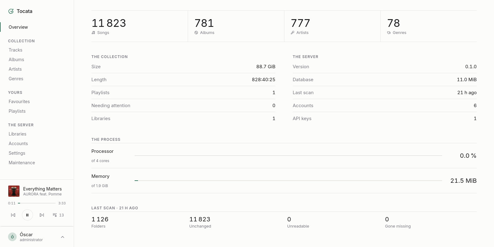
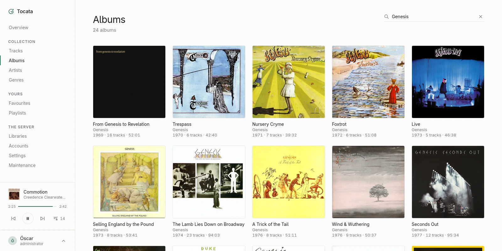
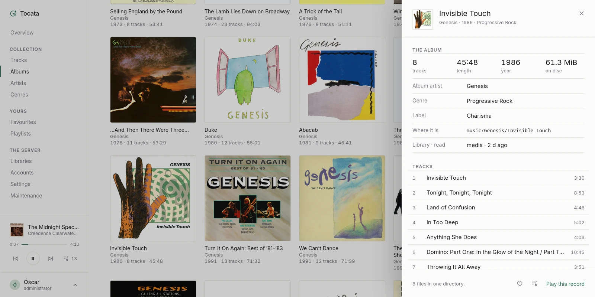
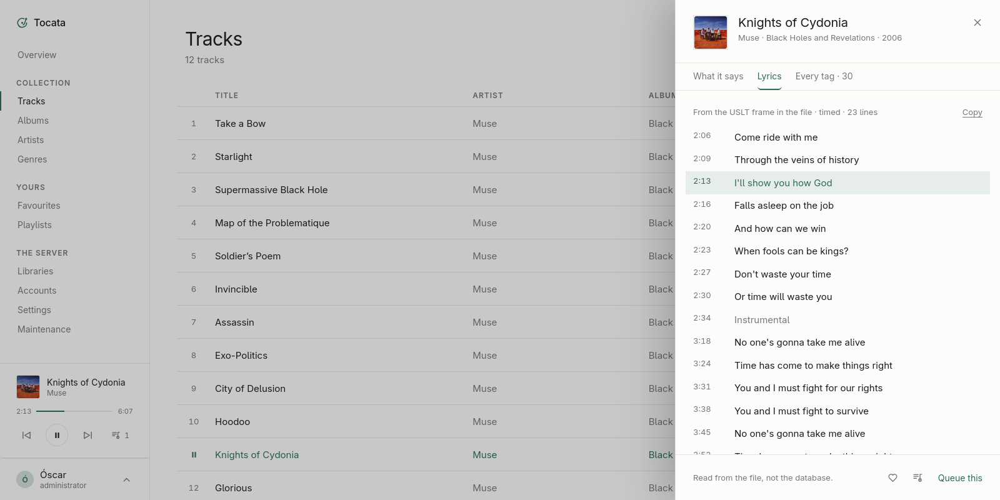
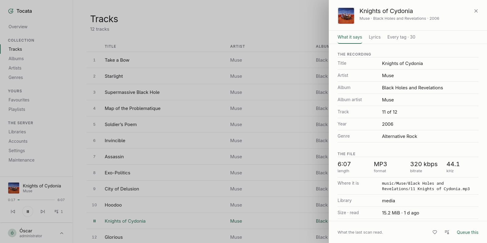
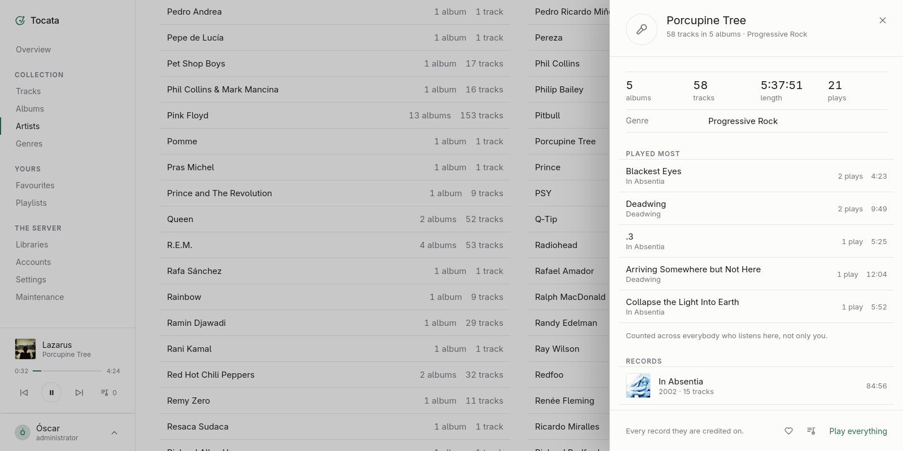

An OpenSubsonic music server, written in Rust.
One binary with its administration panel inside it, statically linked and bringing its own libc. There is nothing to install beside it, no runtime to provide and no web server to put in front of it.
Early days, and now being run in earnest to find out what is still wrong. The
first release is 0.1.0. master is where the work happens — built
and tested on every push, and published as an image of its own, for anybody
who would rather see what is coming than what is finished.
1
binary, panel included
0
runtimes to provide
5
OpenSubsonic extensions
GPL-3
free software
The server side
There are already plenty of good players that speak OpenSubsonic, so building another one is not the goal. What Tocata ships is the server, and the only interface it carries is a small administration panel: what the collection holds, who may reach which part of it, and the housekeeping that keeps both true.
What it leaves alone
Audio is the whole of what this server is for, and the API covers more than audio. Video, transcoding, podcasts, internet radio, chat and sharing are other programs' work. A client is told so where it asks — five extensions declared, an empty listing rather than a 404 — and the reasons, endpoint by endpoint, are in the README.
The panel






Running it
The container image
podman run -d --name tocata \
-p 4224:4224 \
-v tocata-data:/data \
-v /srv/music:/media:ro \
ghcr.io/ogarcia/tocata:latest
Three kinds of tag are published.
latest
is the newest release and moves when one is cut; a version —
0.1.0 — names one release and never moves again, which is the tag
to write down somewhere that has to keep working; and master is
the development branch, rebuilt on every push to it.
docker in place of podman works the same way. Two
directories matter: /data is Tocata's own — the database lives
there — and /media is where the music is. Mounting the music read
only is not a precaution against Tocata, which never writes to a collection; it
is simply true, so the filesystem may as well say so.
Nothing is scanned for having been mounted: /media, or a directory
inside it, is added as a collection in the panel afterwards. Somebody who keeps
their music beside their audiobooks wants two collections with different people
reaching each, and one mount cannot say that.
The first run
Tocata creates its data directory and its database on the way up, and makes one administrator to get in with. That account's password is generated and written to the log exactly once:
WARN tocata::user: initial password for 'admin': …
Then the panel is at http://localhost:4224/. Collections are added
there, one row each, and adding one reads nothing by itself: the scan is started
from the panel's first screen, which is also where it reports what it found
while it runs.
The other two ways
Every release carries a prebuilt binary per architecture, statically linked against musl and bringing its own libc, so it runs on any Linux of the right architecture whatever the distribution — with the checksums beside it on the release page, and nothing needed to fetch it. And Tocata builds from a checkout with Rust, the WebAssembly target and trunk, which builds the panel the server carries inside itself. Both, with the commands, are in the README — along with every environment variable, since everything about the deployment is read from the environment and everything about the music belongs to the panel.
Logging in
There are two doors and they work differently, because a browser and a music
player are not in the same situation. The panel takes a username or an email
address and a password, and hands back a session it can list and close. A player
under /rest proves who it is the way the protocol says, with
u and p — or with an API key from the
apiKeyAuthentication extension, made in the panel, one per client
and each withdrawn on its own.
What is worth knowing before pointing a client at it: token authentication —
s and t=md5(password + salt) — is refused with error
42, and cannot be anything else. Verifying that token means having the password
to hand, in clear or beside the key that decrypts it, and what Tocata keeps is
an Argon2id hash whose whole purpose is that the password cannot be got back out
of it. Between the two, the passwords win. Every client we have tried has a
setting for the other way, worded as plain, clear text or legacy password
authentication depending on the client, and that is what Tocata answers. The
long version is
in the README.